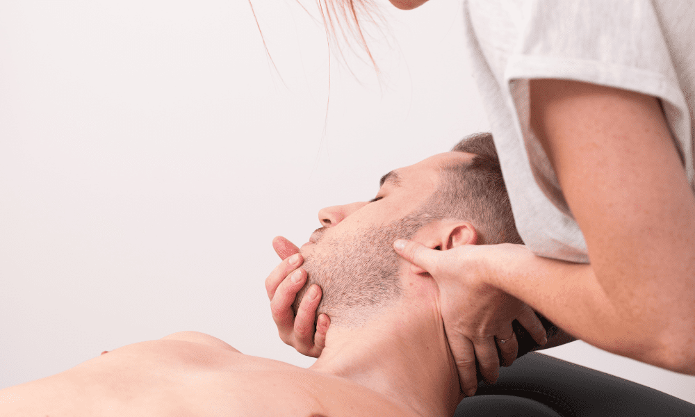
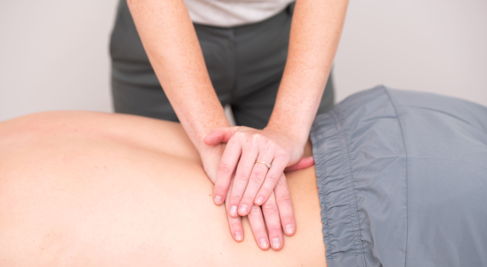

Thérapie Manuelle

Qu'est-ce que la thérapie manuelle ?
Un thérapeute manuel se concentre sur l'amélioration de la liberté de mouvement, la réduction de la douleur et l'amélioration de la posture. L'accent est mis sur l'identification de la cause des problèmes et la compréhension du corps comme un ensemble cohérent, en mettant une attention particulière sur la colonne vertébrale.
La thérapie manuelle est pertinente pour divers groupes, y compris le monde du sport.
Chaque traitement commence par un examen minutieux du mouvement, évaluant la mobilité des articulations de manière exhaustive et spécifique. Cela optimise à la fois la mobilité et la fonctionnalité, permettant aux articulations de bouger correctement et éliminer la douleur.
What can you see a manual therapist for?
- Douleurs au dos avec ou sans symptômes irradiants
- Douleurs au cou avec ou sans symptômes irradiants
- Céphalées et problèmes de mâchoire
- Coup du lapin (whiplash)
- Hernie
- Épaule gelée
- Douleur et raideur due à l'arthrose et aux affections rhumatismales
- Plaintes aux côtes et à la poitrine
- Plaintes générales à l'épaule
